Titãs primordiais
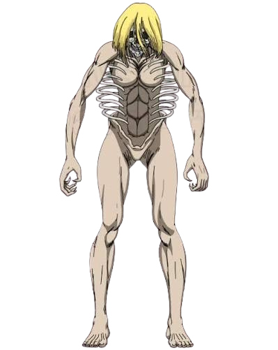
Fundador(Tamanho Variável)
O primeiro e mais poderoso de todos os Titãs, cujo tamanho pode variar drasticamente dependendo do portador (alcançando proporções colossais em seu ápice). Sua habilidade especial é o "Grito", que permite ao usuário controlar as ações de outros Titãs, alterar as memórias e até mesmo a estrutura biológica do povo de Ymir. No entanto, para usar seu poder total, o portador tradicionalmente precisa possuir sangue real ou estar em contato direto com alguém de linhagem real.
principais portadores:
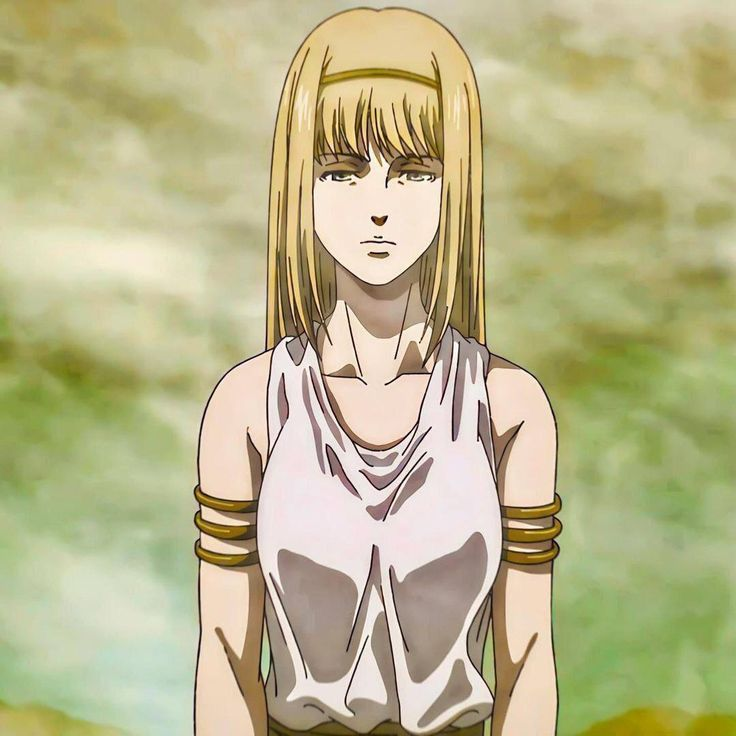
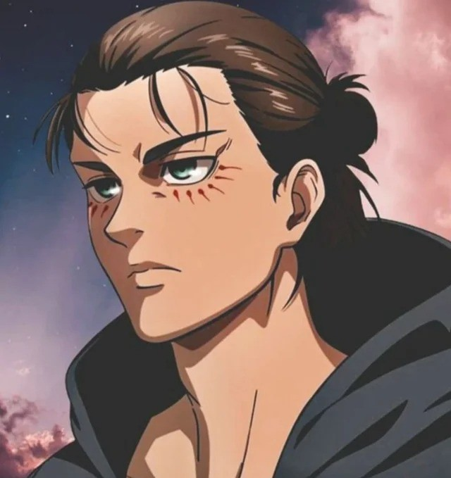
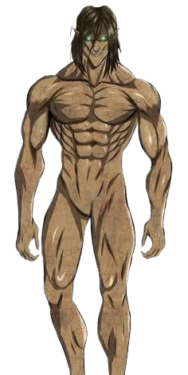
Ataque (15 metros)
Conhecido por sua tremenda força física e imensa determinação em combate, este Titã é o símbolo máximo da busca pela liberdade. Sua habilidade única e mais misteriosa é a capacidade de transcender o tempo, permitindo que seu portador atual acesse não apenas as memórias dos usuários passados, mas também vislumbre memórias de futuros herdeiros, influenciando diretamente a linha do tempo para garantir que seu objetivo seja alcançado.
principais portadores:
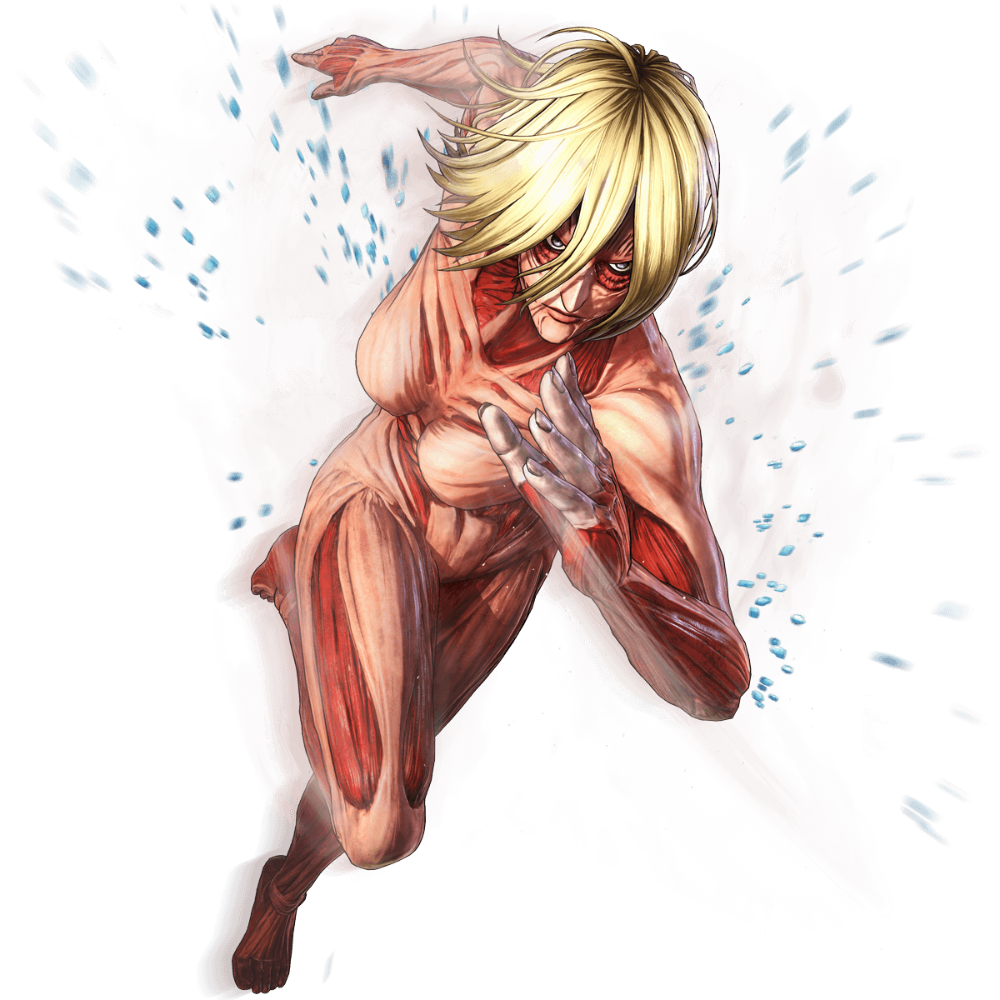
Fêmea (14 metros)
Destaca-se por sua incrível versatilidade, alta mobilidade e excelente aptidão para artes marciais. Sua habilidade especial envolve uma alta capacidade de adaptação: ela consegue endurecer partes específicas de seu corpo para defense ou ataque e possui um grito capaz de atrair Titãs puros para a sua posição, embora não consiga controlá-los como o Fundador. Além disso, ela tem facilidade em manifestar habilidades de outros Titãs ao consumir pedaços deles.
principais portadores:

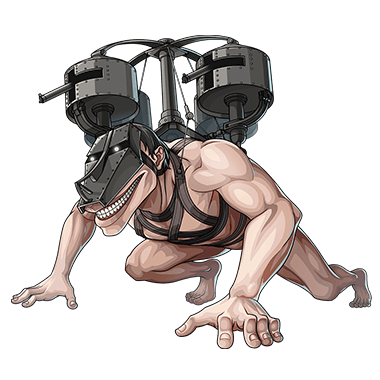
Carroça(4 metros)
É o menor dos Titãs Primordiais, o que o torna inadequado para o combate direto, mas extremamente valioso para funções logísticas. Sua característica única é uma resistência física incomparável, permitindo que o portador permaneça transformado por meses a fio sem se esgotar. Por caminhar de quatro patas, ele é frequentemente equipado com armaduras pesadas, metralhadoras e plataformas de transporte, funcionando como uma unidade de suporte móvel.
principais portadores:

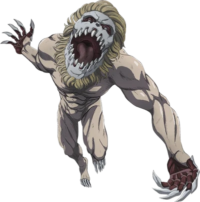
Mandíbula (5 metros)
Um Titã de porte pequeno, mas que compensa a falta de tamanho com uma velocidade e agilidade assustadoras, sendo capaz de escalar estruturas e saltar grandes distâncias com facilidade. Sua habilidade especial reside em suas garras e mandíbula incrivelmente poderosas, que são revestidas por um material endurecido capaz de quebrar e estraçalhar praticamente qualquer substância, incluindo o cristal de endurecimento de outros Titãs.
principais portadores:


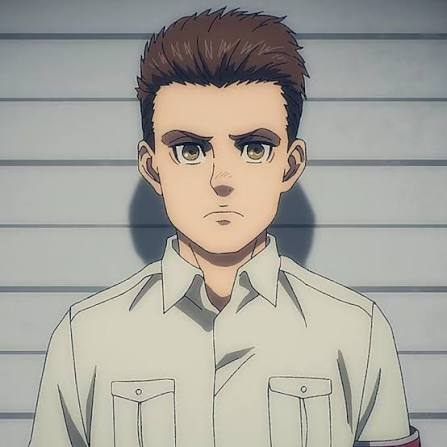

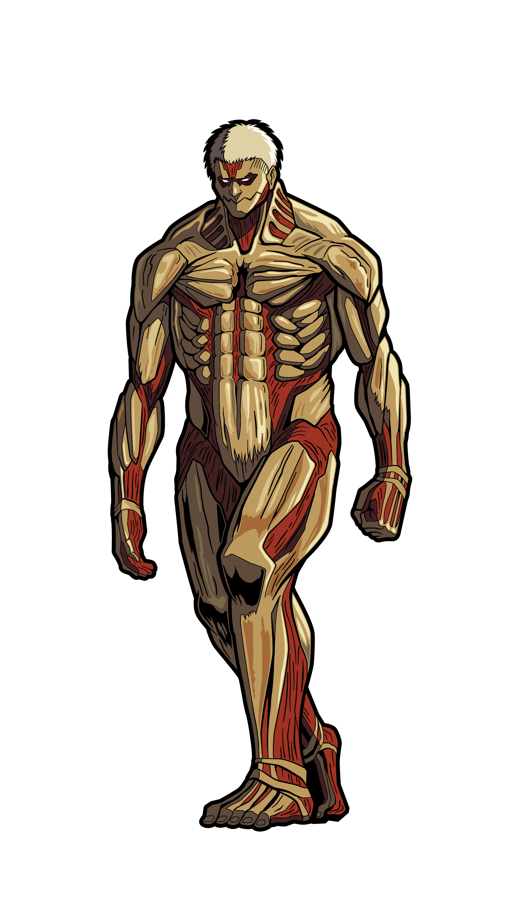
Blindado(15 metros)
Caracteriza-se por ter quase todo o seu corpo coberto por placas de pele endurecida semelhantes a uma armadura orgânica. Essa blindagem o torna uma verdadeira fortaleza viva, capaz de quebrar muralhas através do impacto de seu próprio peso e resistir a ataques de artilharia convencional. A desvantagem dessa habilidade é que o excesso de peso reduz consideravelmente sua velocidade, forçando o portador a desprender partes da armadura se precisar se mover mais rápido.
principais portadores:

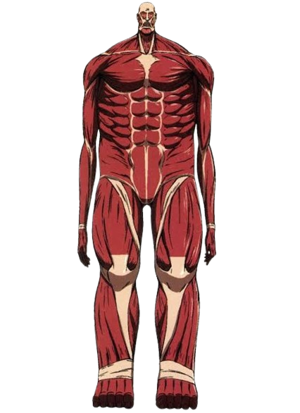
Colossal (60 metros)
O gigante mais intimidador em termos de escala, elevando-se acima das muralhas. Sua transformação inicial é tão massiva que funciona como uma explosão tática semelhante a uma bomba. Sua habilidade especial consiste no controle absoluto sobre a liberação de calor de seu corpo: ao queimar sua própria massa muscular, ele consegue expelir imensas rajadas de vapor escaldante que impedem qualquer aproximação inimiga, embora o uso prolongado dessa técnica o faça encolher e se esgotar rapidamente.
principais portadores:

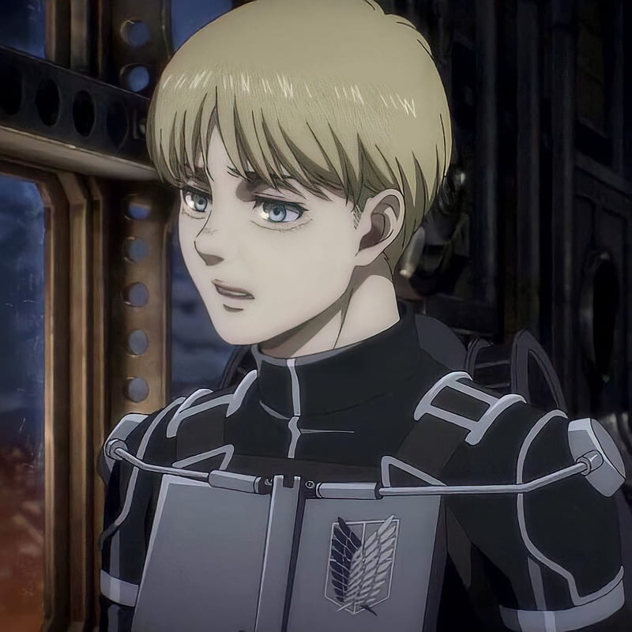
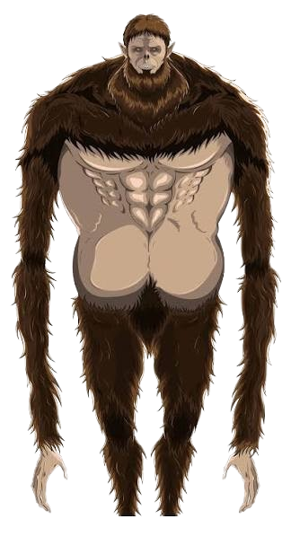
Bestial(17 metros)
Possui uma aparência única que remete a um grande primata, com braços excessivamente longos em proporção ao corpo. Sua principal habilidade envolve a mecânica de arremesso: utilizando seus braços compridos, ele consegue lançar pedras ou projéteis a distâncias imensas com a força e a precisão de um bombardeio devastador. Quando o portador possui sangue real, o Bestial também ganha a capacidade de transformar humanos em Titãs puros através de seu fluido espinhal e comandá-los verbalmente.
principais portadores:

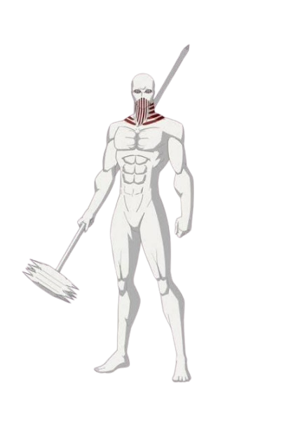
Martelo de Guerr(15 metros)
Um de os Titãs mais perigosos em combate devido à sua habilidade de manipulação estrutural. Ele consegue endurecer e moldar livremente o próprio tecido do Titã para criar qualquer tipo de arma ou ferramenta em tempo real, como espadas, lanças e seu característico martelo gigante. Outra característica única é que seu portador não fica alojado na nuca do monstro, mas sim escondido dentro de um cristal protetor subterrâneo, controlando o corpo do Titã à distância por meio de um cordão umbilical de carne.
principais portadores:
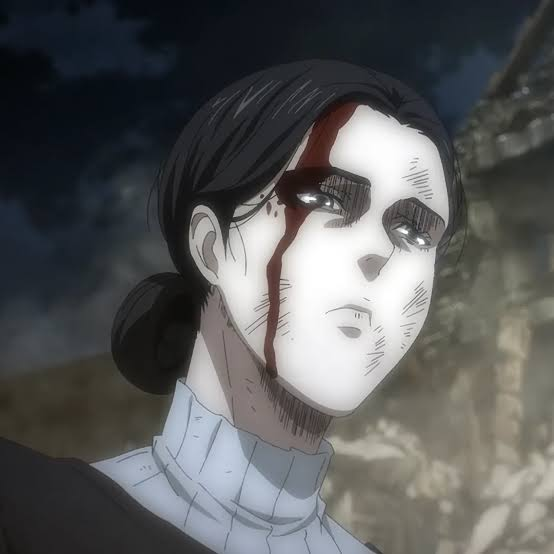
Escala de tamanho:
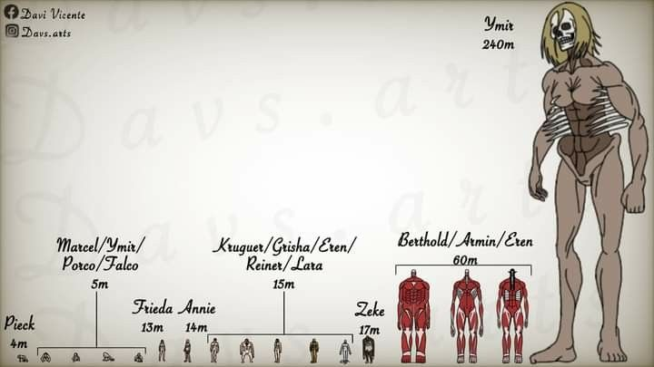
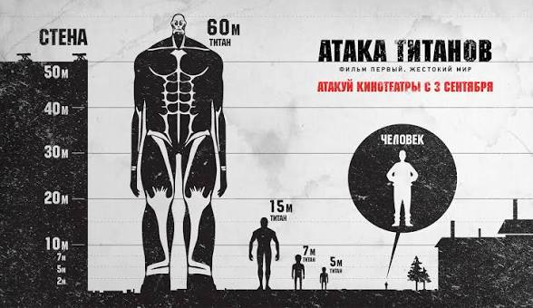
Titãs puros
Normais
São humanos que foram transformados em Titãs por meio da injeção de fluido espinhal. Eles variam de tamanho (entre 3 e 15 metros) e perdem completamente sua consciência, racionalidade e memórias humanas. Agem puramente por instinto, vagando sem rumo com o único objetivo de devorar humanos, embora não precisem de alimento para sobreviver. Eles não demonstram inteligência e são fáceis de prever em combate.
Anormais
São Titãs Puros que apresentam um comportamento imprevisível e fora do padrão. Em vez de simplesmente atacarem o humano mais próximo, eles podem ignorar alvos óbvios para correr em direção a grandes aglomerações, realizar movimentos bizarros (como correr de quatro patas, saltar ou rastejar) ou demonstrar lampejos mínimos de inteligência e fala. Isso os torna muito mais perigosos para os soldados, pois suas ações não seguem a lógica dos Titãs comuns.